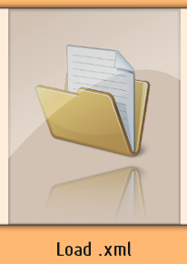
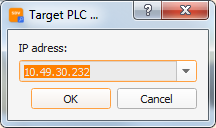

Opening a Systemdump.xml file
Hints:
• Open a Systemdump directly from the PLC by entering the IP-address!
• Drag and drop the Systemdump.xml directly on the main window to open it!
In order to open a Systemdump you have various different possibilties. If there should be any new attributes, through developments by B&R for example, you will get noticed and I'd be happy to receive the information. Please send me a short notice and the Systemdump.xml as attachment.
1. File dialog


If you click on the "Load.xml" button directly on the start screen or select the "Load.xml" entry from the "File" menu a dialog will open where you can navigate to a .xml file you already downloaded from a PLC and open it.
2. Drag'n Drop
You can also just drag and drop your .xml file onto the main screen of the Systemdump Viewer and it will automatically open the Systemdump.
3. File association / open with ...
It is also possible to directly open the Systemdump.xml file with the Systemdump Viewer.
4. From PLC

Last but not least you can let the Systemdump Viewer do the
work and download the Systemdump from the PLC by providing a correct IP address.
Therefore you select "Load from PLC" in the "File" menu or press Ctrl+E. When
using this feature it is also possible to let the SdV download the complete
package incl. dataobjects (logger modules, network commmand trace, profiler
objects). You can switch this this behaviour on or off in the dialog.
Further links: